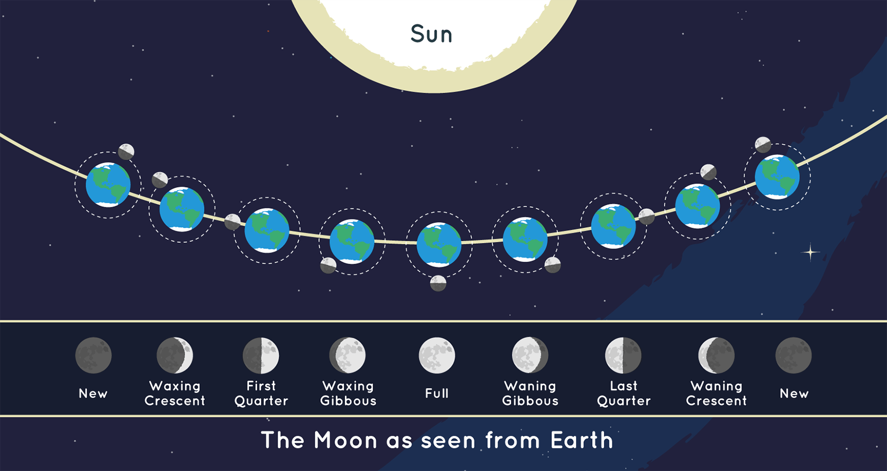

Las fases de la Luna
La luz con que vemos brillar al astro lunar es una parte de la que procede del sol, reflejado sobre su superficie.
A medida que la luna se mueve en torno a la tierra, su relación con los movimientos de la misma, y los movimientos
de ésta alrededor del sol, las áreas de la luna iluminadas por el sol van cambiando, estos cambios de iluminación que presenta se conocen como fases.
Luna nueva:
También conocida como novilunio o interlunio, es cuando el astro se encuentra entre la tierra y el sol, por lo que el hemisferio o “cara” iluminada no puede hacerse
visible desde la tierra, dando ilusión de “no haber luna”. Esta etapa marca la primera fase lunar y su visibilidad puede ir desde un 0 a un 2%.
Esta es una de las fases durante la cual las mareas se encuentran en sus puntos más altos y bajos. A esta fase también se le denomina como luna nueva “visible”.
Luna creciente:
Es la fase en la que comienza a vislumbrarse el satélite en el cielo luego de 3 a 4 días posterior a la luna nueva, y se considera que esta fase dura desde que
se tiene visibilidad de la superficie del astro de un 3 a un 34% desde la Tierra.
Esta fase puede ser vista fácilmente tras la puesta del Sol, siendo observada en el hemisferio norte de la tierra del lado derecho y en el hemisferio sur del lado izquierdo.
Cuarto creciente:
Esta fase está caracterizada porque se visualiza la mitad del disco lunar al estar iluminado por el sol, pudiendo observarse después del
mediodía hasta la medianoche, distinguiendose de un 35 a un 65% de su superficie.
Luna gibosa creciente:
Durante esta fase, se puede ver más de la mitad de la superficie lunar, aproximadamente las tres cuartas partes de la misma, con un porcentaje de visualización
de entre 66 a un 96%. El momento en el que puede observarse es antes del amanecer.
Luna llena:
O plenilunio, es la fase donde se puede observar por completo la superficie del satelite, ya que presenta el 100% de su cara iluminada. En este momento, la tierra, la luna y el sol están alineados casi por completo, al igual que en la fase de luna nueva, con la diferencia que se encuentra a 180º de su lugar inicial en la primera fase.
Luna gibosa menguante:
Similar a la fase gibosa creciente, ya que su observación va desde un 96 a un 65% de la superficie, sólo que esta vez, el porcentaje de iluminación va decreciendo de forma gradual.
Cuarto menguante:
Es la fase opuesta a la de cuarto creciente, pues a pesar de lucir similar en apariencia debido al porcentaje de visualización (de un 65 a un 35%),
es decir, se observa media luna, y su lado iluminado es el opuesto al cuarto creciente. Se puede visualizar durante la medianoche hasta el amanecer.
Luna menguante:
Esta fase, también conocida como creciente menguante, corresponde a la fase final del ciclo lunar, en el que se observan los últimos días de visualización del astro lunar en el firmamento.
Su porcentaje de visualización es entre 34 y 3%, y a su finalización se da por concluido el periodo, dando inicio al siguiente, con la luna nueva, repitiendo el ciclo.
